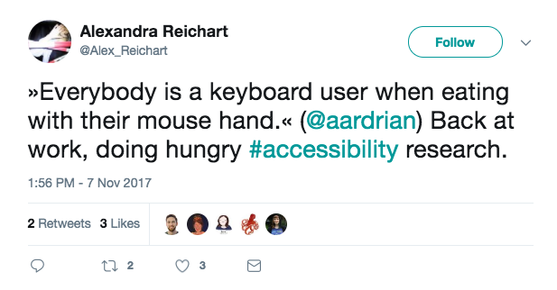

María Evangelina Ferreira Kuzminski
- Front-End Dev at Aerolab
- CSSConf Argentina Team
Today
- What is accessibility?
- How can we help?
What is accessibility?
A11y
"Accessibility is the right of every user to navigate and understand the websites we design and develop."
Accessibility !== Blind Users
Disabilities
Categorize by type or duration
Type
- Sight
- Hearing
- Physical
- Learning
- Vestibular disorders
Duration
- Situational
- Temporal
- Permanent
Benefits for everyone
How can we help?
2 steps
1. Make some noise
2. Working
- Developing
- Testing
Acronyms
- AT: Assistive Technology
- SR: Screen Reader
- ARIA: Accessible Rich Internet Applications
Standard WCAG 2.1
Developing
Mark-up
HTML elements
- Neutral tags
- Semantic tags
Navigation bar
<div class="nav">
<ul>
<li><a href="#">Home</a></li>
<li><a href="#">About Us</a></li>
<li><a href="#">Services</a></li>
<li><a href="#">Contact</a></li>
</ul>
</div>
Make it semantic
- Turn the div into a nav
- Add role="navigation"
"role" Attribute
Sets the element' semantic
Semantic tags have implicit roles
We can change them using role="..."

Actually...
Our semantic tags are NOT enough
(Some) available roles
- alert
- dialog
- presentation
- status
- tab
And many more!
ARIA RolesBesides... Sometimes we need to break the rules and use an incorrect tag
Custom Controls
Neutral tags with roles
Custom Controls
Span that behaves like a checkbox
Creating a checkbox
- Select tag (span)
- Style
- Style the checked state
- Write a little JavaScript
Let's begin
<span class="check"></span>
Let's create interactivity
JavaScript to the rescue!
Making it accessible
- Role
- Tab / Focusable
- Spacebar checked
- Aria-attributes
Applying the Role attribute
<span class="check" role="checkbox"></span>
Tab / Focusable
Tab / Focusable
<span class="check" role="checkbox" tabindex="0"></span>
Toggle with spacebar
Aria-attributes
- What is it?
- What is its current state?
What is it?
What is it?
<span aria-label="I have read conditions" [...] ></span>
What is its current state?
<span aria-checked="true | false" [...] ></span>
Improve our CSS & JS
.check[aria-checked="true"]{
background-color: chocolate;
box-shadow: inset 0 0 2px 2px white;
}
...
Testing
Testing
- Keyboard navigation
- Screen Reader
Testing
Keyboard navigation*
Aim of the test
- Check navigation, duh!
- Check outlines
- Events (enter, tab, spacebar)
- Infinite keyboard loops
Testing
- ChromeVox: Chrome's... Plugin
- NVDA: Open source (Windows)
- Narrator: (Windows)
- VoiceOver: (Mac)
- JAWS: $$$
ChromeVox
Affordable & cross-platform*
Screen Reader User Survey
Aim of the test
- Check navigation
- Check interactivity
- Approach the experience of a screen-reader user
Headphones and... patience
So...
- Test
- Teamwork
- Not an afterthought
Last but not least
- Baby steps
- It's ok to make mistakes!
Fun fact
How do we sell this?
"Selling" accessibility
- Law
- Ethics
- SEO
- http://www.brazilgovnews.gov.br/acessibilidade
- ... Numbers
15% of World Population
World Health Organization
Thanks!
- Slides in GitHub: www.github.com/evaferreira/brazil-js-conf
- Twitter: @evaferreira92
- (: